Learn how to link a chatbot to facebook
Oracle Intelligent Bots Training
Run Your Chatbot on Facebook Messenger
In this lab, you will publish your chatbot on Facebook Messenger. Because this allows users to access your chatbot through a Facebook page, it’s within easy reach of a multitude of users.
This lab shows you how to connect your chatbot to Facebook by creating a Facebook Messenger channel. You might recall from the videos that a channel holds the configuration for a messaging service.
Before You Begin
To complete this lab, you need a Facebook account. For testing purposes--which includes this lab--you can use your own Facebook account or create a new one. For production, you might consider creating an organizational Facebook account.
Important: If you create an account specifically for testing, keep in mind that you need to supply an active mobile number when you sign up for a Facebook account. This number can’t be shared with any other Facebook account, including your personal account. As a result, Facebook might remove the current mobile number from your personal account if you create an additional account for testing.
Because the channel that you’re going to create requires values from both Facebook and Oracle Intelligent Bots, you’ll be switching between the two platforms to complete the configuration. To make this process easier, open one tab in your browser for your Oracle Intelligent Bots instance, and another for Facebook (https://www.facebook.com).
Step 1: Create and Configure a Facebook Page for Your
Chatbot
To start this lab, configure a Facebook page for your MasterBot.
1. Open a new tab in your browser and then log in to https://www.facebook.com using your Facebook account.
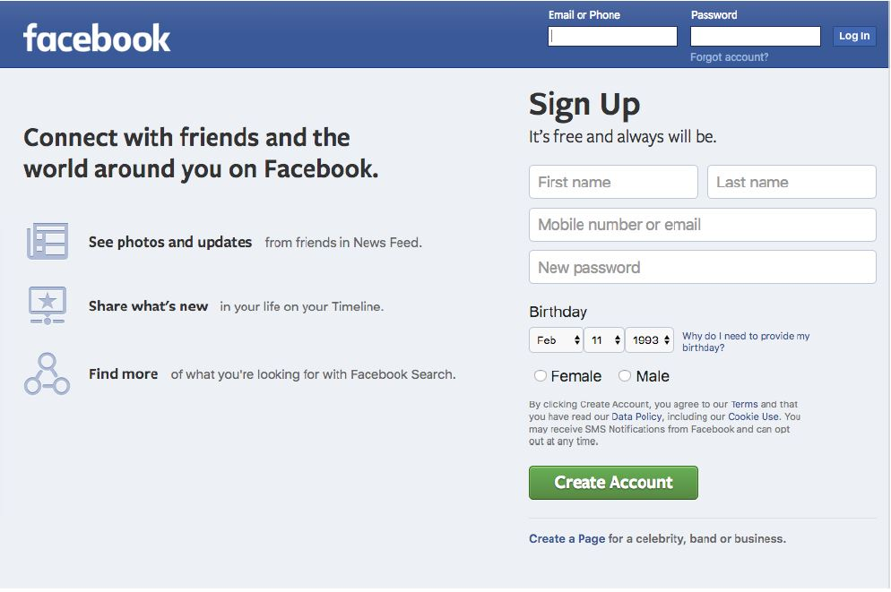
2. Locate the option create a new page at the bottom left of the screen and then click it. If you can't see that link, you may have rearranged your personal Facebook page. Instead, instead go directly to the Create Page option via
https://www.facebook.com/pages/create.
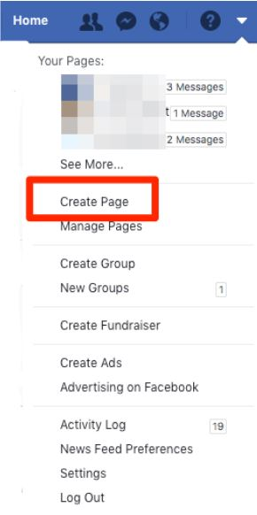
From here, you will create your own Facebook page and name it.
4. Select the type of Facebook page you want by selecting one of the options. For example, choose Company, Organization or Institution.
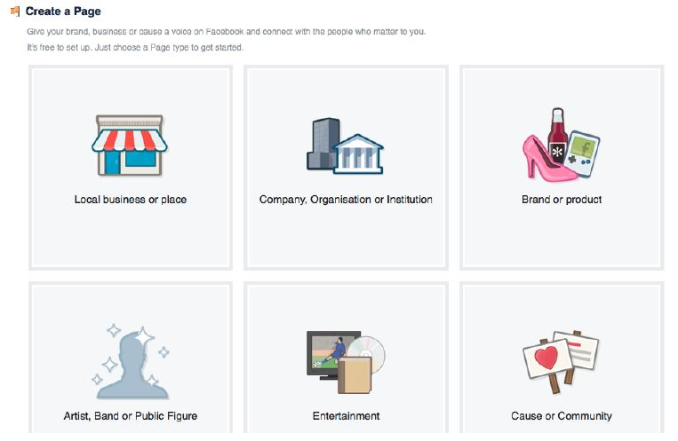
5. If prompted for a further subcategory, select one from the list and then enter the name of the page.
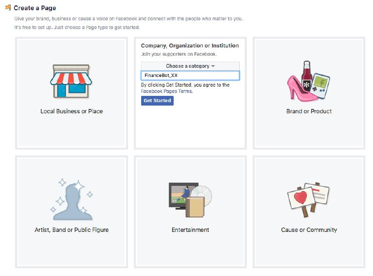
Facebook will create the new page and then display it.
Tip: If you ever want to get back to this page from your personal account, first select the question mark icon's drop down in the top right, then select your page from the displayed list of options.
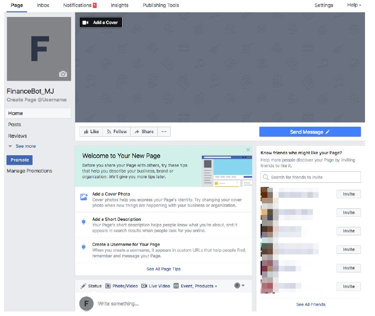
6. Enable your Facebook account as a Facebook Developer Account. To do this, go to https://developers.facebook.com and then click Register.
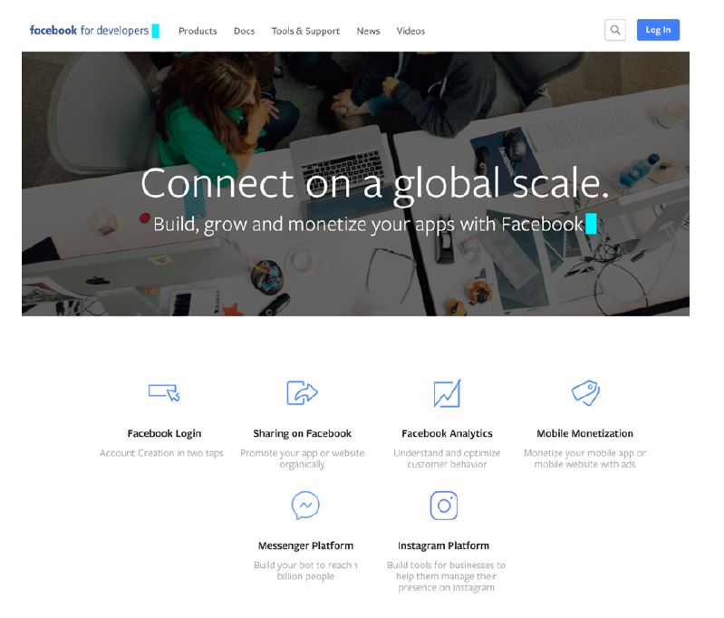
7. If you're already a registered Facebook developer, then you'll be logged in and are ready to create an app. Otherwise, complete the Register as a Facebook Developer dialog by first choosing Yes to acknowledge the terms and conditions, then click Register. When prompted to create a new Application, select Create App ID.
8. If you are already a Facebook developer, then you can create a new app by clicking Add a New App from the My Apps menu located at the upper right.
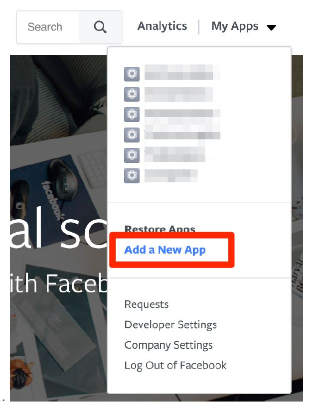9. In the Create a New App ID dialog, enter the name MyBot_xx (where xx are your initials). This app will represent your chatbot in Facebook.
10. Next, supply a contact email address then click Create App ID. The name of this Facebook app is not yet connected to the name of your chatbot. You will connect your chatbot and the Facebook App in later steps.
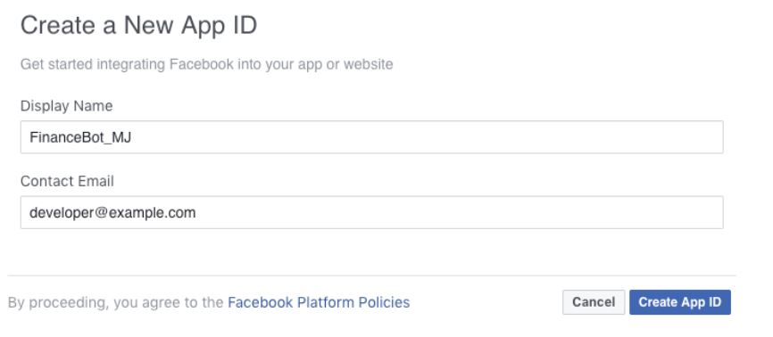
11. Select Dashboard option in the left navbar. The Dashboard page shows you the top-level information about your application, in particular, the App Secret key.
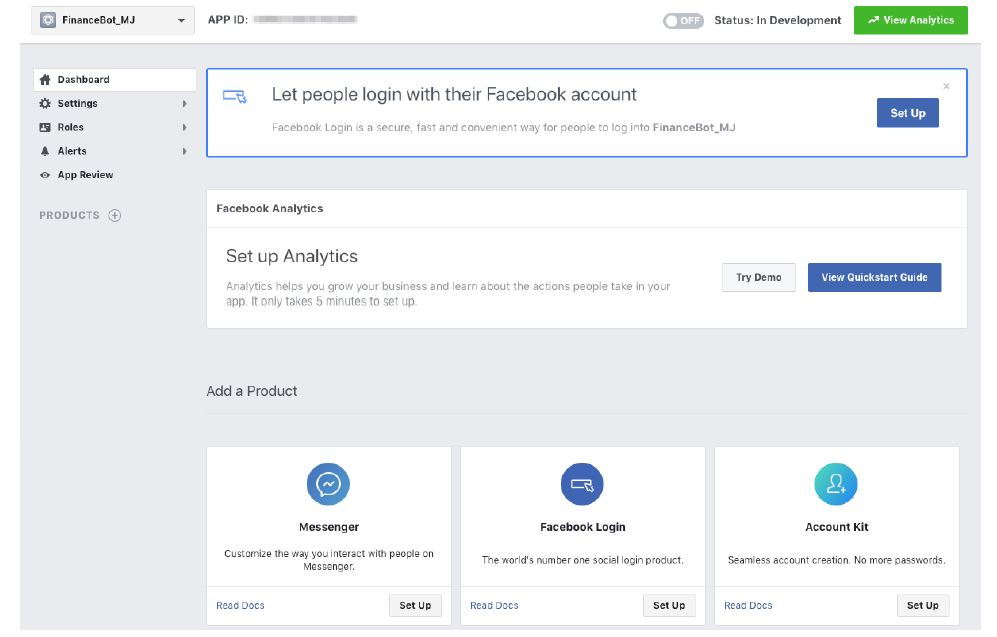
12. You will need the App Secret key for the channel configuration in the Oracle Intelligent Bots, so click Settings and then click Basic. Click the Show button in the right corner of the screen to reveal the App Secret and then copy it to a text file.
Note: You need to provide your Facebook password to view the App Secret key value.
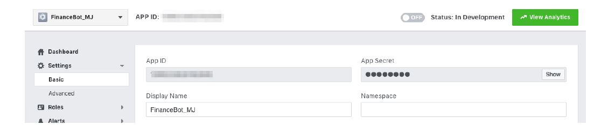
13. Next, you need to add a product to your application. Go back to the Dashboard and then click Set Up under Messenger.
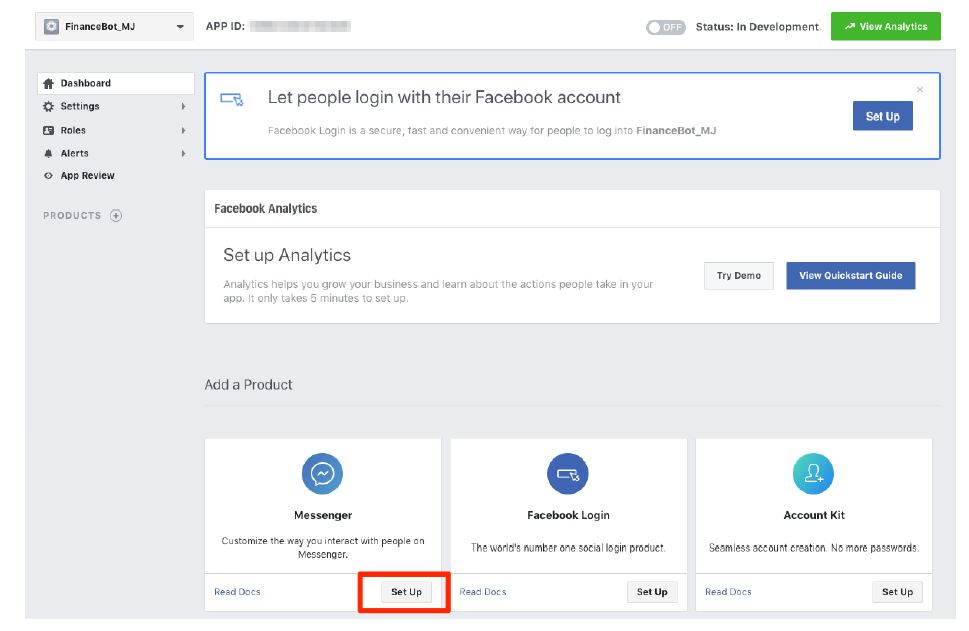
14. Scroll down to the Token Generation section and select the page you have created from the Page drop down menu. When you select your page, Facebook generates a Page Access Token for it. Copy this value into a text file.
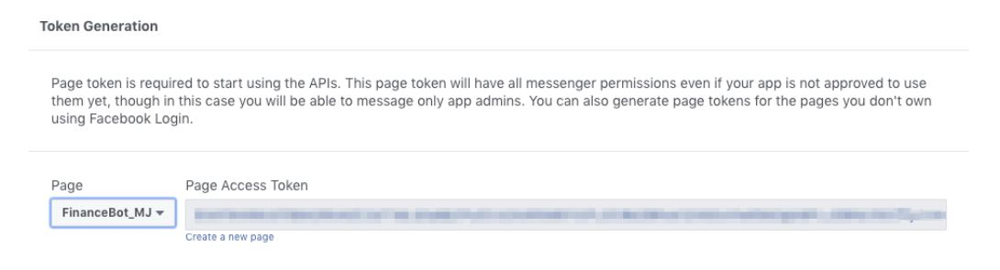Next, you’re going create a channel in the Oracle Intelligent Bots using the Facebookgenerated artifacts.
Step 2: Setup Your Chatbot to Use the Facebook Channel
In this step, you’re going to configure the Facebook Messenger channel itself and then test your chatbot in Facebook.
1. In Oracle Intelligent Bots, click the Settings icon in the left navbar and then click the Channels tab. Click Add Channel.
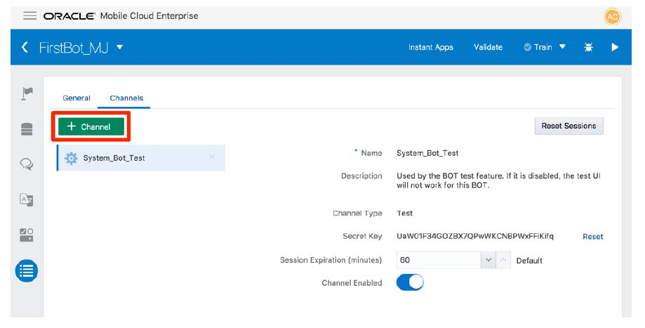
2. In the Create Channel dialog, give the channel a name and description.
3. Be sure that Facebook Messenger (the default) is selected from the Channel Type menu.
4. Next, copy in both the Page Access Token and App Secret key that you saved from Facebook into their respective fields.
5. Switch on the Channel Enabled toggle and then click Create.
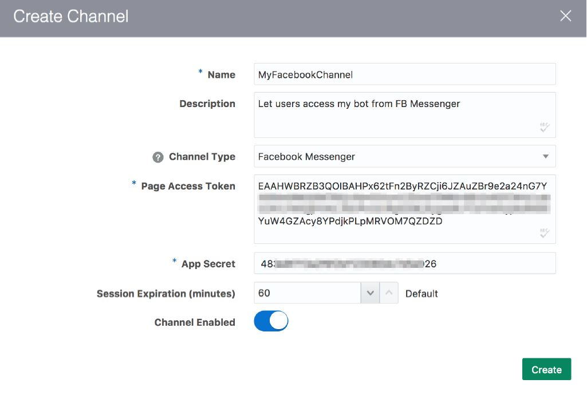
6. In the Channel definition screen, copy the Verify Token and Webhook URL to a text editor. You'll use these on the Facebook side to hook your chatbot up to your Facebook application.
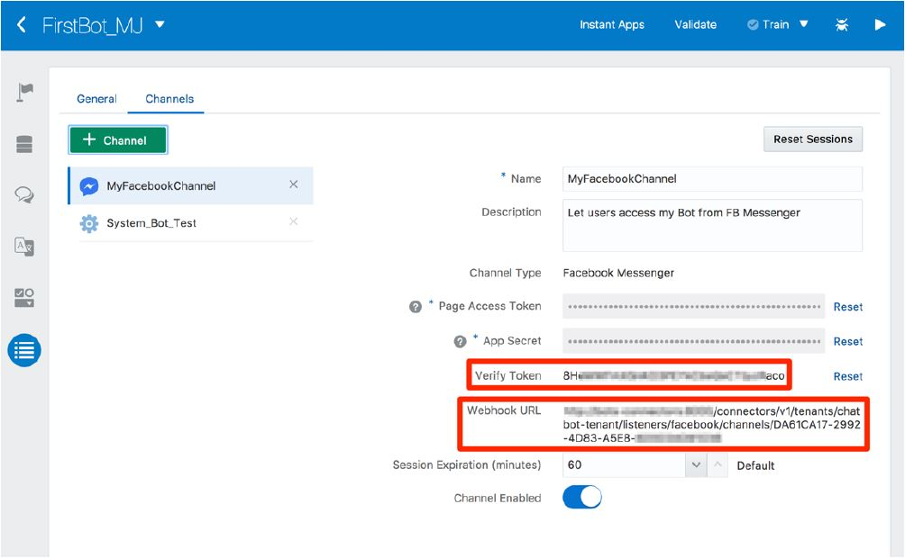
7. Return to the Facebook App and select the Setup Webhooks option (located under the Webhooks below the Token Generation section).

8. In New Page Subscription dialog, copy the Webhook URL that was generated by Oracle Intelligent Bots into the Callback URL field.
9. Copy the Verify Token that was generated by Oracle Intelligent Bots into its respective field.
10. Next, select the following options from the Subscription Fields section:
• messages
• messaging_postbacks
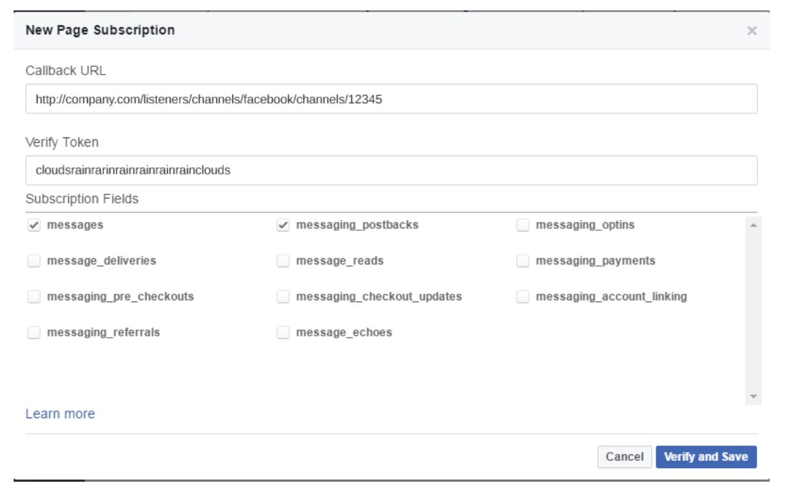
11. Click Verify and Save.
12. In the updated Messenger Settings page, select the name of the page that you created earlier from the Select a Page menu and then click Subscribe.
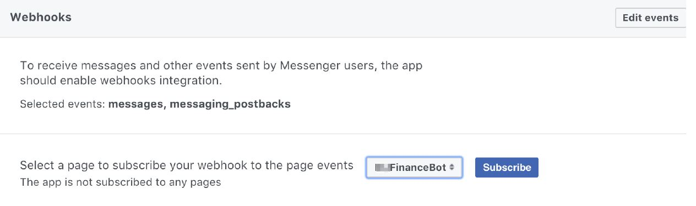
At this point, you have configured both Facebook and the Facebook Messenger channel in Oracle Intelligent Bots. From here, you can test the configuration.
13. Return to your personal Facebook account and got to the page you have created. Click Send Message button and select Edit Button.
14. Expand Contact you and select Send Message.
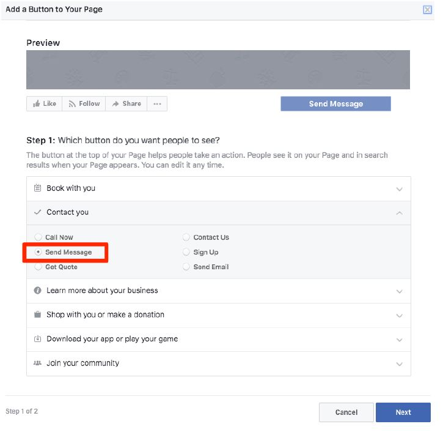
Click Next
15. Select Facebook Messenger and click Finish.
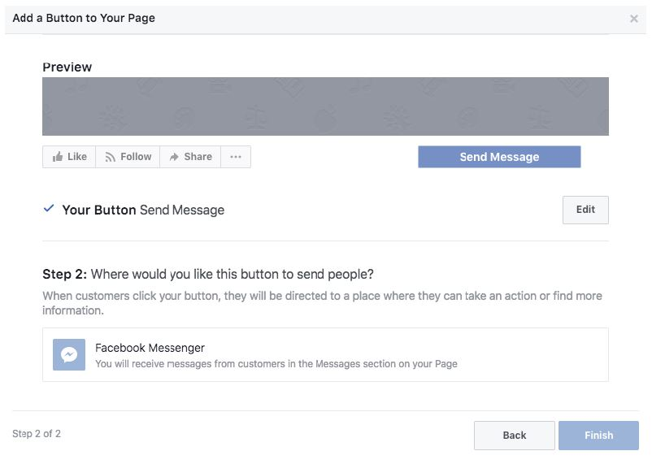
16. Hover over the Send Message button and then click the Test Button to send messages.
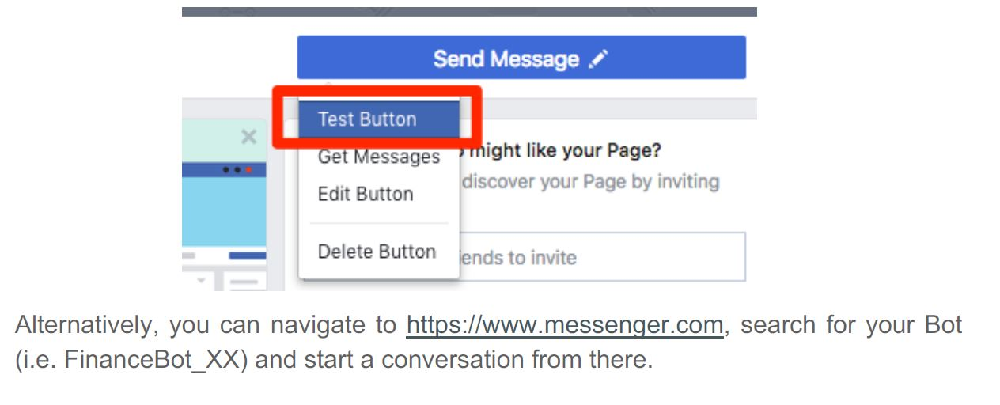
17. You can now message your chatbot using the chat window. You can ask it to perform various tasks, like returning balance information or sending funds to people or sending money to different accounts.
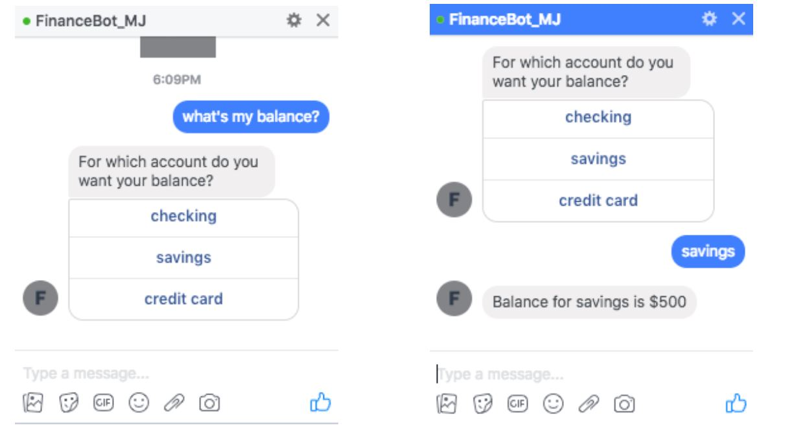
You should also be able to access your chatbot from Facebook Messenger on a mobile device.
Hooray! You have now introduced your chatbot to its public by hooking it up to Facebook Messenger.